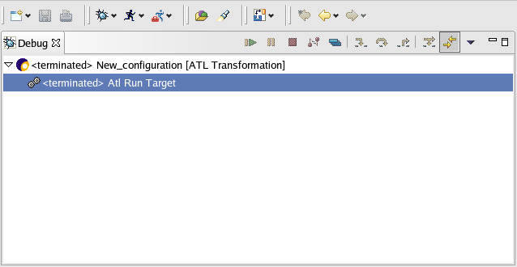

In this section, you will learn more about running ATL transformations in the workbench. In run mode, the program executes, but the execution may not be suspended or examined.
If you're in the Resource perspective, switch to the Debug perspective (Window). For the moment, action "Run" and "Debug" are only available in this perspective.
To launch your ATL transformation, use the drop-down Run menu in the toolbar and select Run....
See ATL Configuration page to know more about the creation of launch configuration.
When your ATL configuration is finished, you can run the ATL
transformation (Button "Run" in ATL Configuration).

Your transformation is running. When terminated state appears in the debug view, the transformation has finished its work. Now, you can create another launch configuration. To see the result, open the output model.